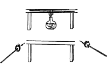

牛頓第一運動定律
伽利略的理想斜面實驗
-牛頓第一運動定律存在邏輯同一之循環論證，可通過理想實驗對該定律進行理論推導 。
-現實中，當球沿斜面向下滾時速度增大，上滾時則減小。由此可知，球沿水平面滾動時，速度應不變。
-但事實上由於存在摩擦阻力，球速會越來越慢直至最後停下，且表面越光滑球便會滾得越遠。
-由此可知，若沒有摩擦阻力，球將永遠滾下去。
-若球沿一個光滑斜面從靜止狀態開始下滾，小球將滾上另一個斜面達到與原來的高度然後再下滾。
-減小斜面傾角後，小球在另一個斜面上仍達到同一高度但滾得遠些。
-由此可知，斜面平放時，球將永遠滾下去。
-此即，力不是維持物體的運動的原因。
-一旦物體具有某一速度且不受外力，就將保持這一速度勻速直線地運動下去。
牛頓第二運動定律
.png)
用打點計時器驗證
-研究系統的加速度與系統的質量和拉力間的關係時，將打點計時器固定在木板的一端。
-把砝碼和小車栓在細線的兩端，細線跨過滑輪，砝碼的重量作為拉力，讓拖?紙帶的小車在平直的平面上運動。
-則小車及其上的砝碼、線的另一端栓?的?碼組成一個運動系統。
-每次實驗均須在紙帶上註明拉力和系統的質量。
-為了抵消摩擦力，通常採取如右圖所示的兩種方法：傾斜滑動法、水平拉線法。
在氣墊導軌上驗證
-將氣墊導軌調平後，由於導軌都存在一定的彎曲，滑塊與導軌間存在阻力，所以調平在實驗中一般用滑塊通過兩個光電門時的速度相等來衡量，測出粘性阻尼常數b。
-為了修正粘滯性摩擦阻力的存在所引起的速度損失，必須解決對粘滯性阻尼常數的測定。
-為了消除粘滯性阻尼，通常採取以下兩種方法：傾斜導軌法、振動法。
用非線性迴歸法驗證
-即使是在氣墊導軌上驗證牛頓第二運動定律，也會有空氣阻力作為主要影響因素影響實驗測量精度。
-這需要嘗試通過修正，其將影響減小到可忽略的程度。
-但常採用的一元線性迴歸法，不足以?明整個迴歸方程的好壞。
-二元線性迴歸法也同樣存在一定的問題。
-用非線性迴歸法驗證定律，首先對質點運動的動力學模型進行線性化處理，得到模型的參數線性估計值，並以其作為非線性模型的初值對動力學模型進行非線性迴歸分析。
-非線性迴歸法驗證了定律的正確性，改進了驗證定律的傳統實驗方法，具有一定的應用和推廣價值。
-此外，驗證牛頓第二運動定律還有:
LabVIEW的教學平台
基於無線模塊和Visual Basic的仿真演示實驗設計
基於光電傳感器的實驗裝置
牛頓第三運動定律
運用傳感器進行定量實驗
-使用兩個力傳感器並保持兩個傳感器在同一平面上，讓兩個傳感器的測力?相互?住或相抵。
-通過數據採集軟件，分別得到兩條力-時間圖線，如右圖1和圖 2所示，同時得到該時間段的作用力和反作用力隨時間變化的實時數據。
-通過觀察可以看出作用力和反作用力與時間的對應關係：任意時刻，這兩個力的大小基本一致。
-這表示這兩個力的大小相等。
-這種實驗方案，不僅適用於量化水平面上的相互作用力，而且適用於量化豎直平面或與豎直方向成任意角度的同一平面上的相互作用力。
-只要和兩個力處於同一平面，就可以精確模擬作用力與反作用力。
-體現了兩個物體之間的作用力和反作用力總是大小相等，作用在同一直線上，更加直觀有效地突出牛頓第三運動定律的普適性。

運用觀察法進行定性實驗
-取一根長約15釐米兩端開口的細玻璃管，管的直徑約3毫米。
-用兩根火柴裝入管中，使火柴頭在管的中間互相接觸，然後放平。
-用酒精燈對準火柴頭加熱、不久因玻璃管受熱升?。
-火柴頭達到?火點迅速燃燒，氣體相互壓迫，兩根火柴桿從兩管的開口處同時飛出，並觀察到繼續燃燒。
-由兩火柴頭飛出的路程大致相等，可?明物體間的作用力是相互的。此即直觀地驗證了牛頓第三運動定律。
-牛頓運動定律的驗證性實驗有多種，本節僅挑選幾種重要或典型的實驗作為示例。隨?現代的實驗設施的利用，原來的實驗方法將有所改進或補充。